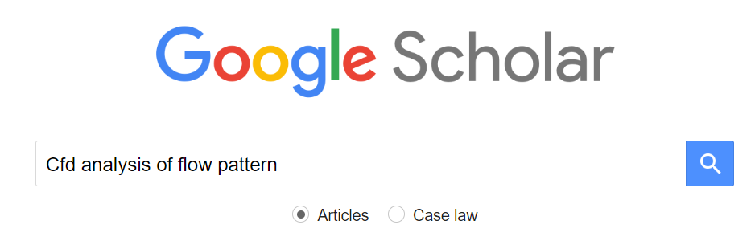
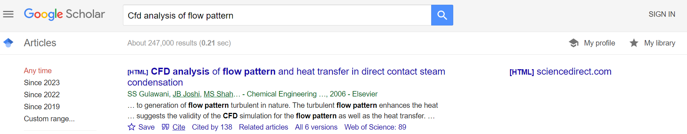
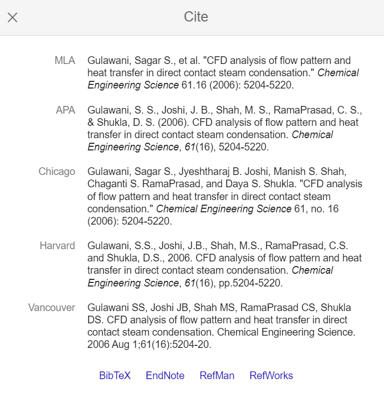
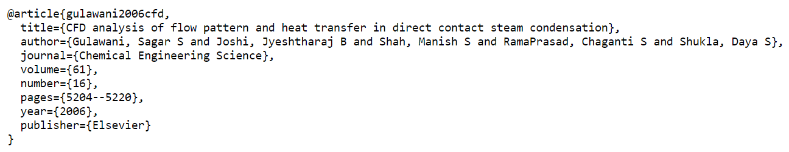

Whenever you mention someone's idea or result, you must cite to that reference.
Visit Scholar Google. Type the paper you are looking for. Let's say name of the paper is "CFD analysis of flow pattern and heat transfer in direct contact steam condensation". Type few words of the paper and search.
Click cite.
Click BibTeX.
Copy everything to ref.bib.
When you cite this paper, use label of the paper. In this example, the label is gulawani2006cfd. Therefore, for citing do \cite{gulawani2006cfd}. After compilation, a number will appear whereever you wanted the citation to be. List of references will appear under References in the order of citation.
There are different types of citations such as article, book and report. The type of the citation was article in the example above. Check out bibtex.com for examples of different citations.
Sometimes there is no BibTeX available. In these cases, make your own entry. Let's say you want to refer to a webpage such as google.com. In this case, you can use @misc as shown in bibtex.com. In TexStudio, there is a tab called Bibliography if you ever need.